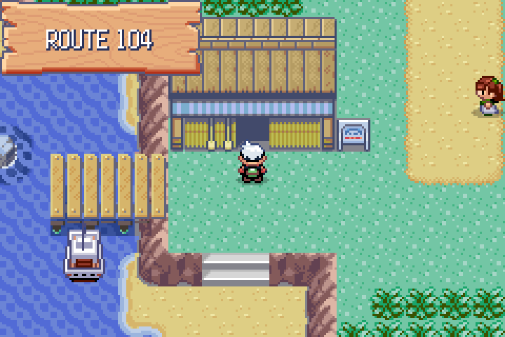
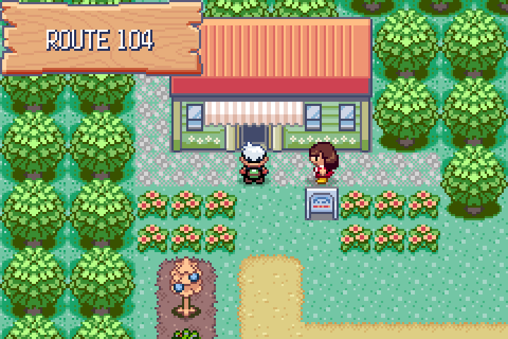
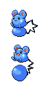
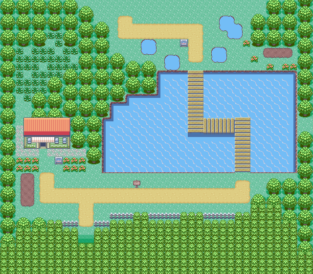
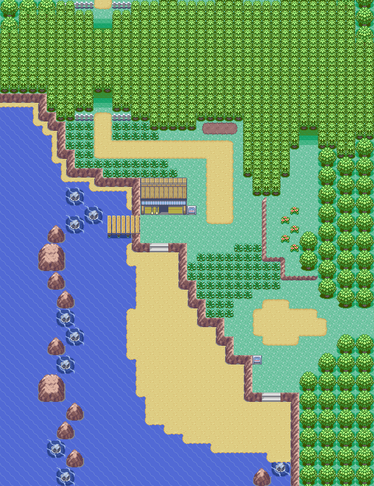

Maps and Events
OFFICIAL FIELD GUIDE
NOTE


Route 104
Moves Needed: HM03 (Surf) for the pond and the northern shore
ITEMS
- Sceptilite
- Swampertite
- Love Ball
- Net Ball
- Moon Stone (hidden)
- Dive Ball (hidden)
- Great Ball (hidden)
- Friend Ball (hidden)
- Net Ball (hidden)
FLOWER SHOP
| ITEM | PRICE |
|---|---|
| Red Plant | ₽3,000 |
| Tropical Plant | ₽3,000 |
| Pretty Flowers | ₽3,000 |
| Colorful Plant | ₽5,000 |
| Big Plant | ₽5,000 |
| Gorgeous Plant | ₽5,000 |
Decorations only. The women will not sell until you
have a base to put them in.
POKÉMON ON LAND
| POKÉMON | CONDITIONS |
|---|---|
| Azurill | Common |
| Pikipek | Common |
| Pidgey | Uncommon |
| Roselia | Uncommon |
| Budew | Uncommon |
| Croagunk | Uncommon |
| Hoppip | Rare |
| Bunnelby | Rare |
| Yungoos | Rare |
| Litleo | Rare |
| Smoliv | Rare |
| Fletchling | Very rare |
| Audino | Rustling grass |
| Aipom | Rustling grass |
| Pichu | Rustling grass |
Every land encounter is level 5 to 7.
POKÉMON IN WATER
| POKÉMON | CONDITIONS | LV |
|---|---|---|
| Wingull | Surfing, very common | 50–55 |
| Tentacruel | Surfing, very common | 50–55 |
| Corsola | Surfing, rare | 50–55 |
| Mantine | Surfing, rare | 50–55 |
| Wiglett | Surfing, very rare | 50–55 |
| Magikarp | Old Rod | 15–20 |
| Skrelp | Old Rod | 15–20 |
| Clauncher | Good Rod | 25–30 |
| Horsea | Good Rod | 25–30 |
| Octillery | Good Rod | 25–30 |
| Feebas | Super Rod | 55–60 |
| Sharpedo | Super Rod | 55–60 |
| Bruxish | Super Rod | 55–60 |
| Wishiwashi | Super Rod | 55–60 |
| Luvdisc | Super Rod | 55–60 |
Read those levels again. The grass here is
level 5. The water is level 50. Surf is a late-game key on an early
map, and this route is where you learn it.


To Rustboro City
To Petalburg Woods
Flower Shop
Swampertite
Sceptilite
Gina & Mia
NORTH HALF — after the woods

To Petalburg Woods
To Petalburg Woods
To Petalburg City
Mr. Briney's House
Berry soil
SOUTH HALF — on the way in
26